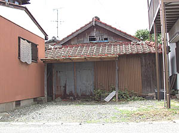
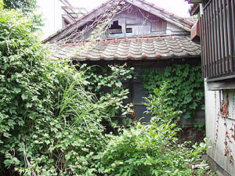

上甲米太郎さん訪ねある記（大牟田編）
（聞き取り年月日場所：2008年7月7日 大牟田市）

上甲米太郎さん（1902-1987）については、「異風者からの通信」の冊子第11号および12号で、横川さんにより紹介
されているので、ここでは、福岡県大牟田市における上甲米太郎さんが住んでいた所について記しておきたい。
愛媛県八幡浜市出身の上甲米太郎さんは、朝鮮の学校長もして、朝鮮語が出来たことから、強制連行された朝鮮人の管理係として
北海道釧路地方にあった三井系の炭鉱へ移り、さらにその朝鮮人炭鉱労働者を三井三池鉱業所四山鉱まで引率する仕事に就いた。そ
のことがきっかけとなって、福岡県大牟田市にそのまま住み着いたが、敗戦後間もなく三池炭鉱を解雇される。実は、戦前の釧路や
大牟田、また戦後の大牟田においても、朝鮮人のお世話をよくしていて、朝鮮の人たちから慕われていた。会社にとっては、逆にそ
のことが、上甲さんの存在を煙たがっていった理由のひとつでもあったのかも知れない。
今回、その大牟田における上甲米太郎さんの足跡（そくせき）を求めて、7月、横川さんと二人で大牟田の夏を歩いてみた。
ある資料によると、大牟田における上甲さんの住所は「Ｔ町62番地」であったという。

三井三池三川鉱正門前から南に歩いて数分の所に、「Ｈ酒店」がある。同所在地は、大牟田市Ｔ町52番地。同店には、ここ
で生まれ育ったというＭさん（90歳）がいる。今では少なくなった立ち飲みもさせてくれる。炭鉱が閉鎖されるまでは、炭
鉱電車を待つ仕事帰りの炭鉱労働者で店は賑わったという。Ｍさんのご主人自身、三井三池港務所で三池港水門を開閉する仕事を
していたとのことだった。また、Ｍさんの息子さんは三池鉱業所の人事課にいたが、「共に病気で亡くなった」という。
現在、Ｈ酒店前には民家が建ち並んでいるが、「元々は三井三池港務所の駅や職員社宅などの施設があった場所」だと言い、
「そこへ戦後の混乱期に朝鮮の人たちが家を建てて住み着いていった。昔は10軒ほどあった朝鮮人部落が、今は3軒ほどとなった。
当時は豚を飼ったりヤミ焼酎を造って暮していた。」とＭさんは語る。「その朝鮮人部落一帯がＴ町62番地」だとも。前記の
資料とも一致する。
上甲さんについてＭさんに尋ねてみた。「上甲さんの名前は記憶にないが紙芝居のおじさんのことなら聞いたことがある」という。
Ｈ酒店の斜め前に位置する家の表札が「金」となっていた。同所を訪ね上甲さんのことを聞いてみた。金さんの奥さんは80歳過ぎ。
「上甲さん、ああ知ってる、隣りの家にいた」という。「上甲さんが話す朝鮮語は私たちと何ら変わらなかった」とも。その北隣りの
家は平屋建てで空家になってかなり傷んでいた。同家屋の裏にも、廃屋があった。そのまた裏は、三池鉄道跡の土手になっていた。
炭鉱電車が走っていた所である。金さんらは戦前、朝鮮全羅南道から職を求めて日本へやって来て、東京に住んだという。大牟田に
住むようになったのは戦後からで、魚を採ったり、日雇いの仕事などをして暮らしてきたと語る。「暑いから中へ入りなさい」と、
金さんは初めての者にお茶まで出してくれた。優しいひとだった。
この金さんの家から南へ3軒ほど先に「Ｋさん」の家があり、その表札には「Ｉ 町○○番地（旧 Ｔ町62）」と、わざわざ
旧住所名が書き記されていた。
以上の話をまとめてみると、上甲米太郎さんが住んでいた所は、金さんの家の北隣りではないかということがわかってきた。
なお、別の人の話によると、「今ある実際のＴ町62番地は、もっと南の方。会社関係の建物がある所で、住宅ではない。」という。
行政の区画整理で、町名や番地が変わることは、ままあることらしい。
そんな上甲さんは、1966年5月8日、多くの仲間達による「上甲さんを送るつどい」で見送られて、大牟田駅から東京へ旅立って
行ったのである。
BACK
|